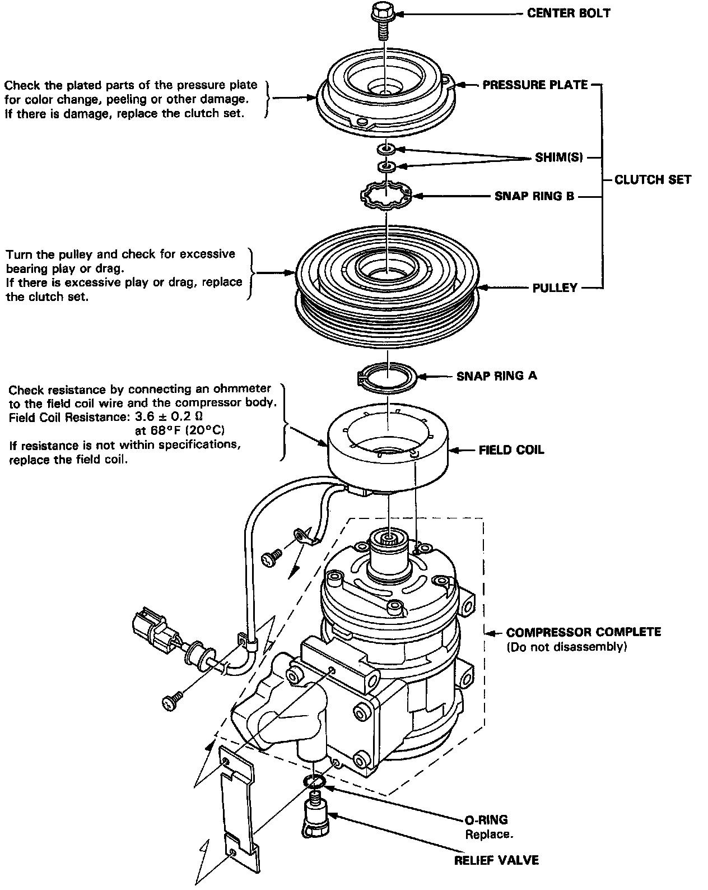
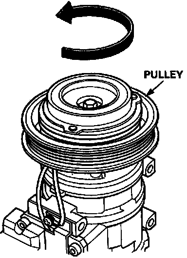
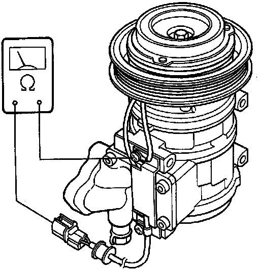
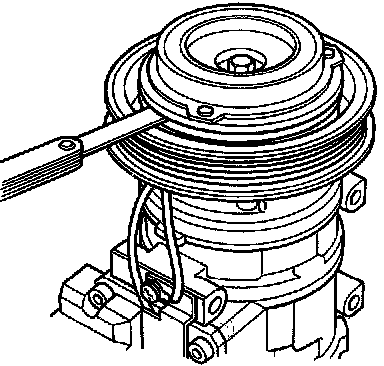

Compressor Clutch: Testing and Inspection

Compressor Clutch Inspection

1. Check pulley bearing play and drag by rotating the pulley by hand. Replace the clutch set with a new one if it is noisy or has excessive play/drag.

2. Check resistance of the field coil:
Field Coil Resistance: 3.6 ± 0.2 ohm at 68°F (20°C)
If resistance is not within specifications, replace the field coil.

3. Measure the clearance between the pulley and pressure plate all the way around. If the clearance is not within specified limits, the pressure plate must be removed and shims added or removed as required.
Clearance: 0.5 ± 0.15 mm (0.020 ± 0.006 in)
NOTE: The shims are available in three sizes: 0.1 mm, 0.3 mm and 0.5 mm of thickness.